Android screen, speaker and headphone jack repair
Learn what’s inside an Android phone, then repair the Google Pixel 4a’s screen, bottom loudspeaker or 3.5 mm headphone jack. Diagnose first and change one part at a time.
Identify the phone and its parts
Use a spare that belongs to you and can be backed up. On the Pixel, check Settings → About phone → Model before looking up a part. These photos show the Google Pixel 4a with a 5.81-inch screen and a round headphone jack at the top. The Pixel 4a 5G is a different design. Android’s menus can look similar across phones whose brackets, flexes and opening direction differ. Google’s model and hardware specifications.
Start outside. Find the earpiece at the top of the screen, the headphone jack at the top edge, the USB-C port and the loudspeaker outlet at the bottom, and the rear fingerprint sensor. The glass, image panel and touch sensor are serviced here as one screen assembly. This model uses an OLED panel, whose pixels produce light. The touch sensor reports where your finger is. One function can fail while the other still works.
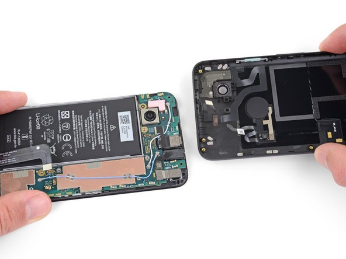
Photo by Sam Omiotek for iFixit, scaled for the course, with labels added. iFixit guide, step 29 · CC BY-NC-SA 3.0.
Find the same functions inside. The mainboard contains the processor, memory and surrounding electronics. The battery feeds it. A flex is a thin bendable printed circuit joining a module to the board. A plug may press down, slide out or use a latch. The loudspeaker turns an electrical signal into sound. A microphone turns sound into a signal. The earpiece and lower loudspeaker are separate parts, and media on a stereo phone can play through both.
This is an older training handset. Use one with a sound battery and an intact enclosure. Google has a separate battery program notice for this model, including changes that can affect charging and runtime on some units. Stop if the case is raised by swelling, the phone is heating unusually or the battery is damaged. Google’s Pixel 4a battery notice.
Choose the repair while the phone is closed
On a working donor, take the same notes you would take on a faulty phone. Record the model, original symptom and which functions pass. Test touch, charging, normal call audio, speakerphone and a voice recording. Repeat the same tests after the work.
| Complaint | First comparison | Next branch |
|---|---|---|
| No image | Look for ringing, vibration or a response to a call. Test a known-good charger as in P35 if there is no sign of startup. | A response with a dark panel supports investigating the screen and its connection. A fully unresponsive unit needs the power and startup path checked too. |
| Image works, touch fails | Remove any damaged protector. On an unlocked spare, drag or draw across the screen and note where the line stops following your finger. | Repeat at a different orientation or in another app. A consistently dead screen region makes the touch path a candidate. |
| No sound, crackle or low volume | Disconnect Bluetooth audio. Compare the same audio clip, a normal call at the earpiece, speakerphone and known-good headphones. Check the exterior grilles according to the manufacturer’s cleaning guidance. | A normal earpiece and headphone result with a repeatably weak lower outlet points to the lower speaker path. The grille, contact and module remain separate checks. |
| Wired audio cuts out | Test two pairs of compatible headphones that work on another device. Remove any case blocking the plug and inspect the jack under good light. | Repeatable failure with both pairs while the built-in speakers work points toward the jack path. Prove it before you open the phone. |
| Others can’t hear you | Record your voice, then listen to the recording on known-good headphones or another device you own. | A bad recording is evidence about audio input. A good recording with bad local playback sends you back to the output tests. |
Google’s Pixel sound troubleshooting.
When testing audio, play the same stored speech clip at a moderate fixed volume. Turn off Bluetooth for that comparison and note the selected output. Record a short clip first and play it on a second known-good device when a microphone fault is suspected. That separates a bad recording from a bad speaker. For another module and a different kind of diagnosis, compare camera outputs while the handset is still closed. Samsung’s individual component tests · P61 Android camera diagnosis.
Replace the Pixel 4a screen
Use a compatible screen assembly and the complete Pixel 4a screen guide. Its opening diagram and limits are part of the procedure. Check whether your part includes the top adhesive and earpiece mesh. Keep the guide open beside the bench.
Watch on YouTube · Joe Winston’s Pixel 4a screen replacement. Pause to locate the opening seam and then the cable bracket. Use the photo guide for tool depth, cable handling and screw positions.
- T3 Torx driver and screw mapKeep the connector bracket screws separate from the longer internal ones.
- Suction handle, plastic picks and spudgerUse the pick between layers and the spudger at the connector, where the guide shows.
- Recommended adhesive and opening suppliesUse the guide’s controlled adhesive-release method. For broken glass, follow its containment instructions and wear eye protection.
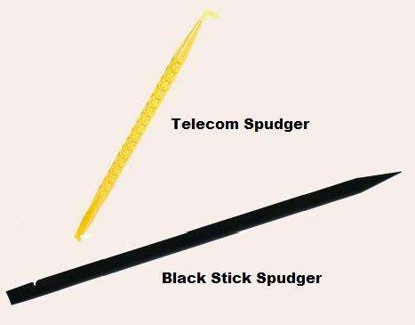
Photo by Michael Anderson, scaled for the course. Original photo · Public domain.

Power off and identify the right seam. Discharge an intact working donor below 25%, unplug the charger and shut down completely. Look for the seam directly under the display. The deeper seam between the frame and back shell stays closed for this screen job.
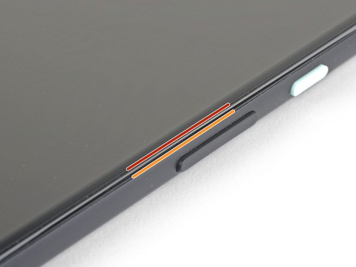
The red line marks the screen seam you use first. The orange line marks the deeper frame seam, which is still held by screws.
Photo by Sam Omiotek for iFixit, scaled for the course. iFixit guide, step 1 · CC BY-NC-SA 3.0.Lift and work the adhesive. Use the guide’s controlled warmth and suction at the right edge. Start with only the pick tip in the screen seam, then use the angle and depth limits for each side. The guide shows the fragile cable near the bottom-right and the earpiece mesh at the top. If the pick snags, stop and check what it touched.
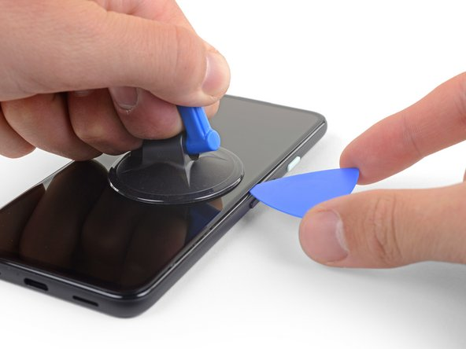
Look how little of the pick enters at first. The guide specifies a maximum of 1 mm at this first entry.
Photo by Sam Omiotek for iFixit, scaled for the course. iFixit guide, step 3 · CC BY-NC-SA 3.0.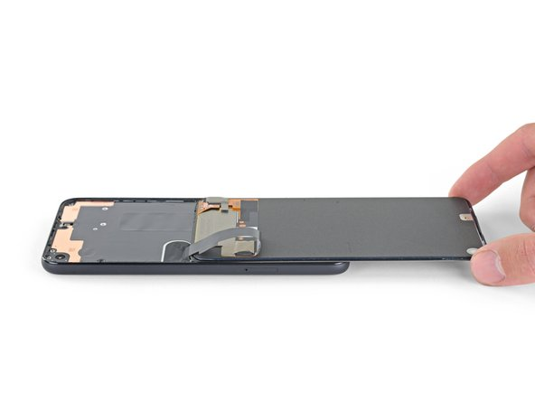
The loose panel rests on the work surface. Note the short flex that limits its travel.
Photo by Sam Omiotek for iFixit, scaled for the course. iFixit guide, step 10 · CC BY-NC-SA 3.0.Support the display and free its plug. When the perimeter releases, move the panel as the guide shows and rest it flat so the cable carries no weight. Move the tape, map the two bracket screws, remove the bracket and release the press connector with a plastic spudger. On this design the screen connector is reached with the phone shut down and unplugged. The internal battery plug sits behind another bracket and is reached later for deeper repairs.
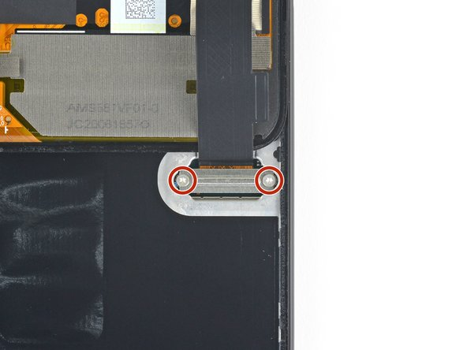
The highlighted screws secure the small bracket above the display connector. Record where the tape and bracket sit before removing them.
Photo by Sam Omiotek for iFixit, scaled for the course. iFixit guide, step 12 · CC BY-NC-SA 3.0.
Follow the flex back from the screen to the plug. Lift at the edge shown in the guide. Align the replacement plug before pressing its ends down.
Photo by Sam Omiotek for iFixit, scaled for the course. iFixit guide, step 14 · CC BY-NC-SA 3.0.Fit and verify the replacement. Compare old and new parts for the connector and earpiece mesh. Align the new display plug over its socket and seat its ends as the guide shows. Refit the bracket and tape. Use the exact adhesive and follow the reassembly procedure. Check image, brightness and touch across the panel, including corners. Make a call to check the earpiece and that the display responds to proximity.
Open farther to reach the sound modules
The loudspeaker and jack are reached behind the back cover on this Pixel. To reach them you first remove the SIM tray and the screen using the sound-module guide. Read the whole guide before starting, including how to reassemble the display. Practise the screen job first because an otherwise usable screen can break during a deeper repair.
After the screen comes off, remove the midframe fasteners and free the back cover as shown. Spring contacts sit near the edge. The guide limits the pick at this second seam to 2 mm after the fasteners are removed. Support the back cover because the buttons and fingerprint sensor are still connected.
Map the separate motherboard bracket screws. Free the fingerprint ribbon where it attaches to the bracket, remove the bracket and disconnect the battery plug with the guide’s plastic tool method.
With the battery now isolated, disconnect the button and fingerprint flexes as directed and remove the cover. Keep each fastener with the part it secured.
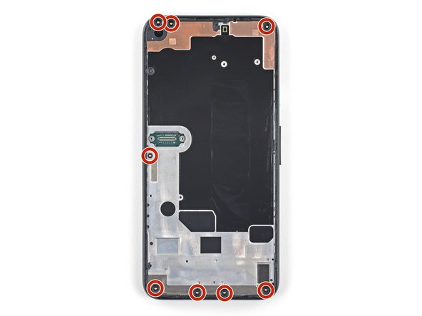
Photo by Sam Omiotek for iFixit, scaled for the course. iFixit guide, step 17 · CC BY-NC-SA 3.0.
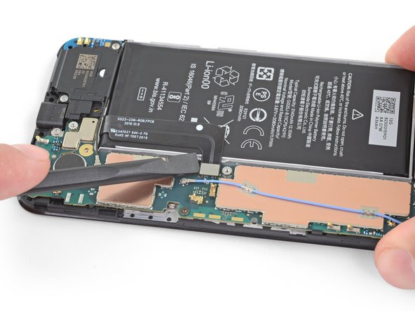
Photo by Sam Omiotek for iFixit, scaled for the course, with labels added. iFixit guide, step 27 · CC BY-NC-SA 3.0.
Replace the bottom loudspeaker
The lower speaker has an acoustic enclosure and an antenna flex in the same area. A failing speakerphone test alone cannot identify the speaker. Confirm the audio checks above and compare the exterior grille first. Full Pixel 4a loudspeaker guide.
Watch on YouTube · DIYgeardo’s Pixel 4a bottom speaker replacement. Find the black speaker assembly at the lower edge and watch how the technician turns it over to reach the flex.
With the screen and back cover removed and battery disconnected, identify the two lower speaker fasteners. Photograph the speaker, antenna flex and the outlet that lines up with the case.
Lift and turn the housing over as the guide shows, then disconnect the antenna flex before freeing the module from its tape. Keep tools clear of its membranes.
Compare the new and old speaker housings and mount the replacement in the same position. Refit the antenna flex and route all cables as recorded. After reassembly, repeat the same media clip and a speakerphone call. Verify charging and any wireless functions disturbed by the repair.
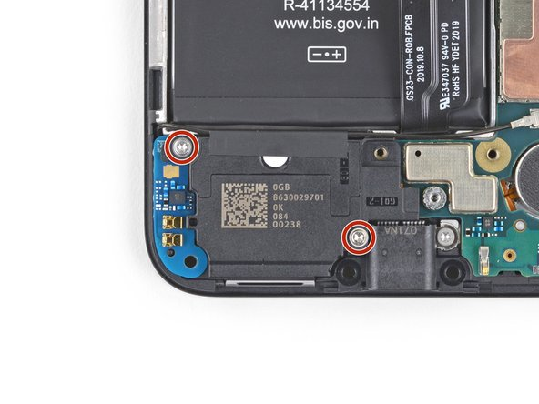
Photo by Sam Omiotek for iFixit, scaled for the course. iFixit guide, step 30 · CC BY-NC-SA 3.0.
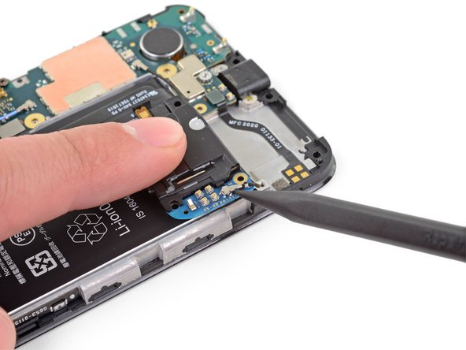
Photo by Sam Omiotek for iFixit, scaled for the course. iFixit guide, step 32 · CC BY-NC-SA 3.0.
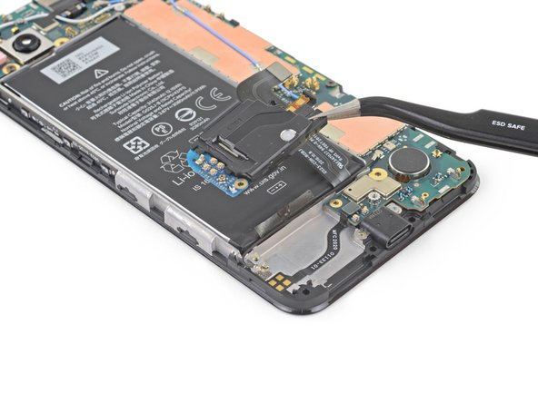
Photo by Sam Omiotek for iFixit, scaled for the course. iFixit guide, step 33 · CC BY-NC-SA 3.0.
Replace the 3.5 mm headphone jack
The Pixel 4a has a separate jack module near the top of the phone. Find the round socket, its short flex and the plug where the flex joins the mainboard. Charge through the bottom USB-C port is a separate path on this handset. Full Pixel 4a headphone-jack guide.
Watch on YouTube · DIYgeardo’s Pixel 4a headphone-jack replacement. Look for the short flex beside the round socket. Watch the module lift out of its seat after the plug has been released.
Confirm the original fault with two known-good sets of headphones. Record left and right sound and whether the output changes when you insert and remove the plug.
Follow the guide through screen removal, back cover and battery isolation. Identify the headphone flex connector and release it as shown.
Release the jack’s adhesive with a plastic pick and compare the replacement with the original. Match the opening and orientation when fitting it, then restore the plug, brackets and other flexes.
After reassembly, check plug detection, both stereo channels and the headset microphone if your known-good headset supports one. Unplug the headphones and check that the phone’s own speaker output returns. Retest the side buttons and fingerprint sensor, whose flexes were disturbed.
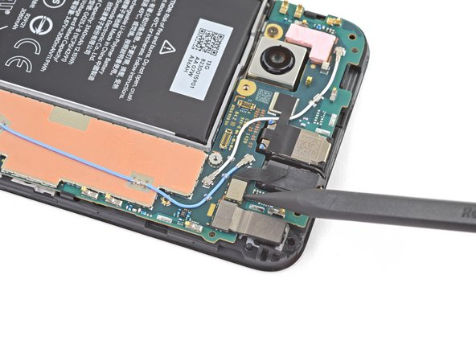
Photo by Sam Omiotek for iFixit, scaled for the course. iFixit guide, step 30 · CC BY-NC-SA 3.0.
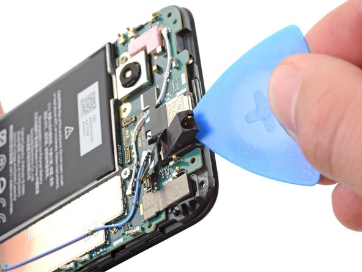
Photo by Sam Omiotek for iFixit, scaled for the course. iFixit guide, step 31 · CC BY-NC-SA 3.0.
Close the job and transfer it to another Android model
For the job record, write the original fault, the comparison that isolated the suspect path, the part you worked on and each result after reassembly. If a new fault appears, check the connections you disturbed. Use the exact model’s procedure and any required diagnostics on your next Android phone. Parts, adhesives, panel opening side and connector placement vary, even within one brand.
Continue on the Pixel 4a · Diagnose and replace the battery · Galaxy A54 charging-port diagnosis and repair · Google Pixel repair and diagnostics · C16 · Record the job.